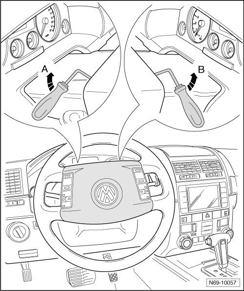
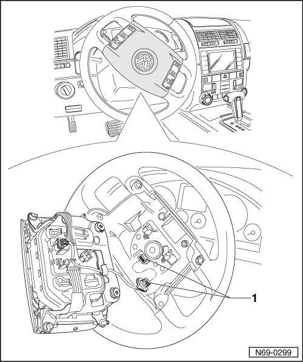

Driver Airbag
Driver Airbag
• The screwdriver mentioned in the following instructions should be approximately 180 mm long and have a blade width of 7 mm, and be angled 90° in front third.
Removing
CAUTION!
Observe safety precautions for working on airbags --> [ Airbag Safety Precautions ] Technician Safety Information.
- Adjust steering wheel height to the lowest position.
- Adjust steering wheel depth (reach) so it is in the fully extended position.
- Turn steering wheel 180° out of straight ahead position, to the illustrated position.
- On vehicles with electrical steering wheel adjustment, switch off the ignition.
- Disconnect the vehicle batteries
- Insert the specified offset screwdriver onto limit stop (35 mm), in the left hole in the rear of the steering wheel.
CAUTION!
During the following instructions, the screwdriver may not be moved downward!
- Turn the screwdriver upward - arrow A -. By doing this, the first locking tab of the airbag unit is released from the steering wheel bezel.
- Insert the specified offset screwdriver onto limit stop (35 mm), in the right hole in the rear of the steering wheel.
- Turn the screwdriver upward - arrow B -. By doing this, the second locking tab of the airbag unit is released from the steering wheel bezel.

CAUTION!
Electrostatic discharges can lead to an unintended deployment of the airbag. Therefore the technician must discharge static electricity from the body before separating the ignition and ground wiring. This is done e.g. by briefly touching the body or the door striker or pin.
- Remove airbag out of steering wheel and separate connector - 1 -.

Installing
- Connect connector - 1 - and push airbag unit into steering wheel.
- Check whether airbag unit is engaged on the left and right-hand side of the steering wheel.
- Switch the ignition on.
CAUTION!
Make sure that no persons are in the vehicle.